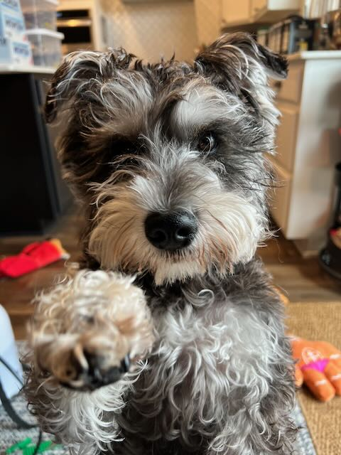

Miniature Schnauzer Personality Traits
Miniature Schnauzers are famously people-oriented. Bred to work alongside farmers, they are alert, clever, and happiest when they are part of whatever the family is doing.
- Alert and watchful — quick to announce visitors, which makes them excellent little watchdogs.
- Affectionate — they bond closely and often follow their favorite people from room to room.
- Smart and curious — they learn fast and get bored without something to do.
- Spirited — a true terrier streak gives them confidence and a bit of stubbornness.
Living With a Miniature Schnauzer
The breed generally does well with children and enjoys being part of a busy household. Most get along with other dogs, though their terrier instincts can make them want to chase small pets. Because they are so attached to their people, they dislike being left alone for long stretches and may bark or grow restless when bored.

Energy and Exercise Needs
These are active little dogs. A couple of walks a day plus some playtime usually keeps them satisfied. They love games that use their nose and brain, and they excel at dog sports like agility and rally.
Good for First-Time Owners?
Yes — their size, trainability, and adaptability make them a friendly choice for new owners, as long as you are ready for regular grooming and consistent, positive training.
That watchdog bark
Alertness is a feature, but it can tip into nuisance barking. Learn how to manage it →